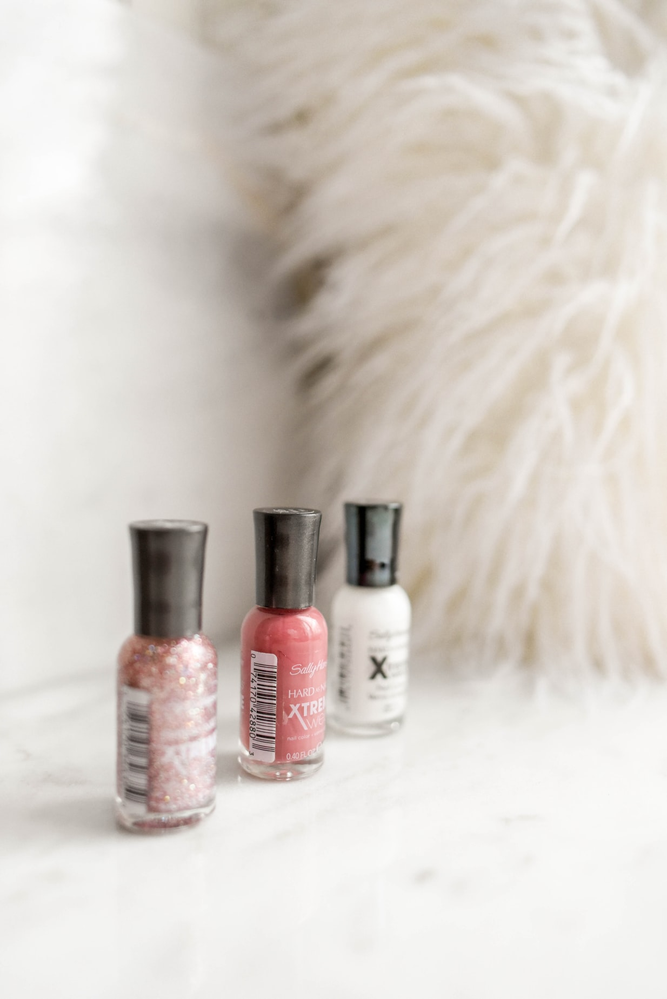
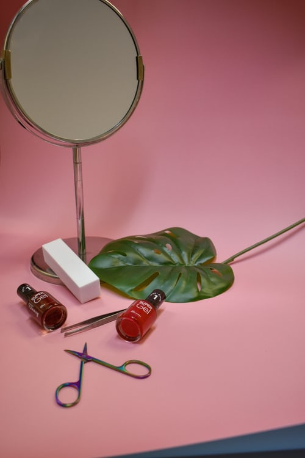
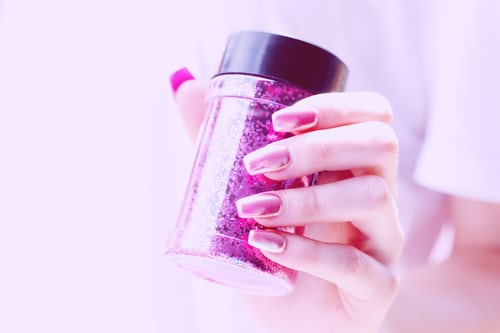
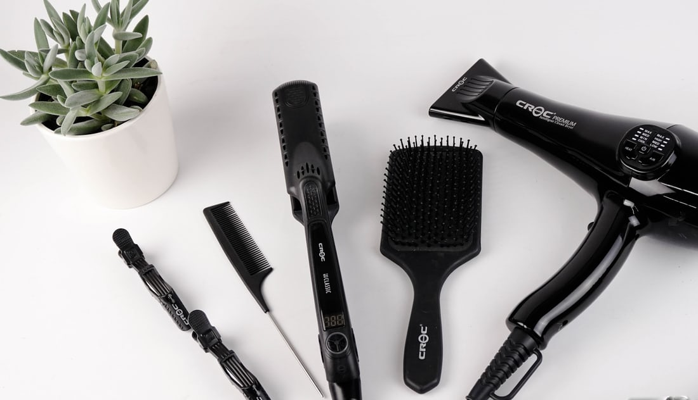
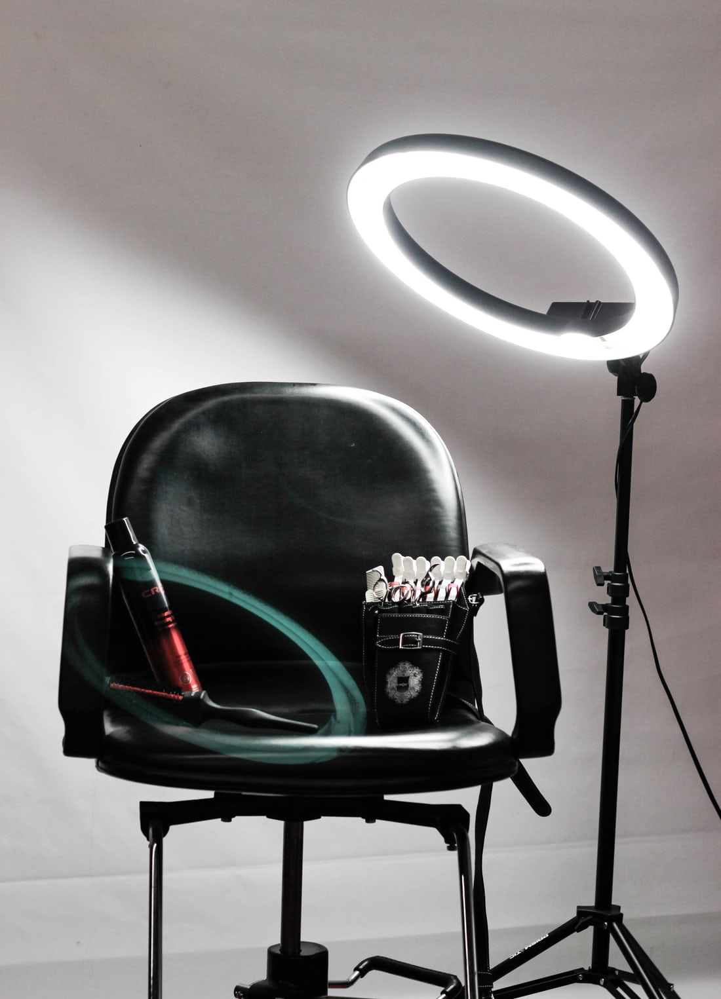
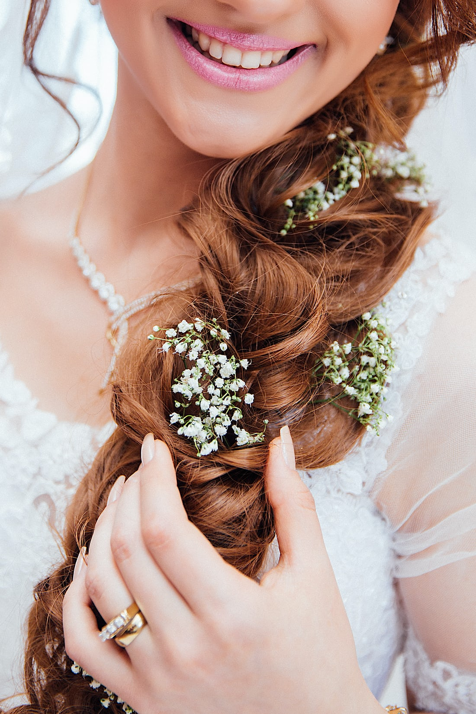
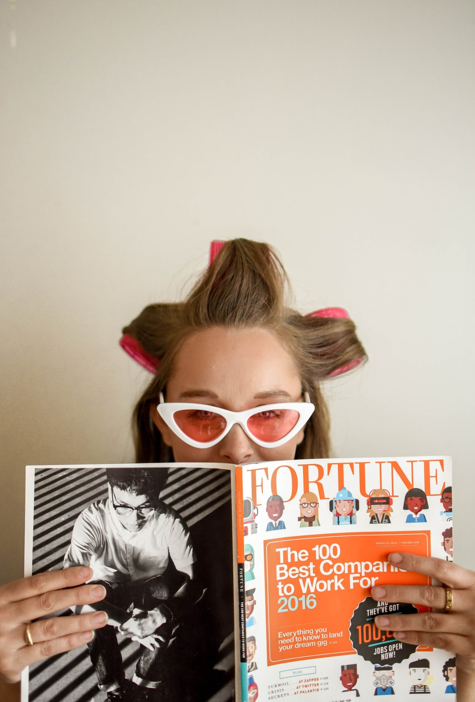

From the very first time you step inside Ena Salon, its rustic-meets-urban charm offensive, warm friendly atmosphere and eco overtones, interspersed with signatures of the natural world, make it feel entirely home-from-home. And, as Master Stylist and Brand Director Samuel Ryde explains, this is exactly what Ena Salon intended. ‘Every detail has been meticulously considered to deliver high-end luxury and personalised care, so the client has an unforgettable experience’.

Their philosophy is evident from the very start with its name translated from the Greek word meaning ‘One’. As a statement of intent, this crystallises a vision embodied in Ena’s mantra; one team, one dream, one focus. Their mission to deliver exceptional hair and beauty services in a homely environment set upon a foundation of sincere ecological values is reflected throughout.

From homemade cakes to hand-selected wines and teas and coffees to its product lines, which have been painstakingly researched for their natural and environmental credentials, to the materials sourced to create this very unique salon space, Ena has set out to maximise the customer experience and minimise environmental impacts. Wherever possible,

recycled and up-cycled materials are used. Rustic wood workstations and display shelving have provenance, and staff can even tell you what each fixture was in a previous life. This all creates an ethos of sustainability and environmental responsibility that sets Ena apart as an authentic ecological salon.

Ena’s focus on ethics is inspirational and while many furniture pieces are up-cycled, it had to be Takara Belmont when it came to selecting new equipment. Samuel Ryde: ‘When it came to new equipment we focussed on sustainability. This meant selecting a brand that would stand the test of time and deliver many years of performance to eliminate the need for regular refurnishing, replacements and repairs.

We chose Takara Belmont’s Cadilla styling chair as its design syncs perfectly with our decor and interior design and the RS Adria II shampoo system to ensure exceptional service at the backwash. These choices both ensure we uphold our principles of sustainability and supreme quality.’

With a defined and very principled approach to service, salon design and equipment, Ena is making a name for itself in the hairdressing industry. But when all is said and done, it’s all about the customer. ‘In the end we want to make customers feel welcome, comfortable and entirely satisfied with first-class hairdressing and beauty services,’ concludes Samuel.

Learn more about Ena here: http://www.enasalon.com/